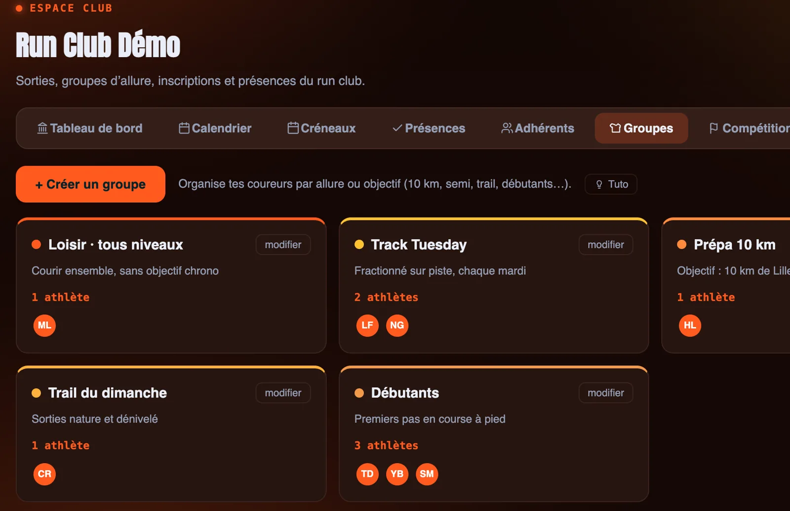
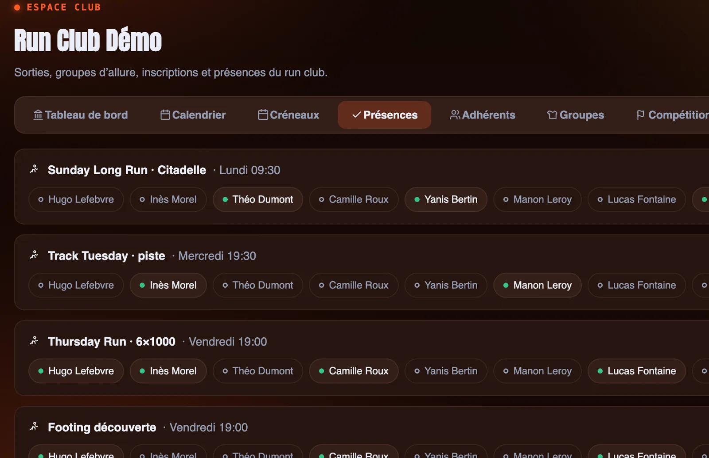
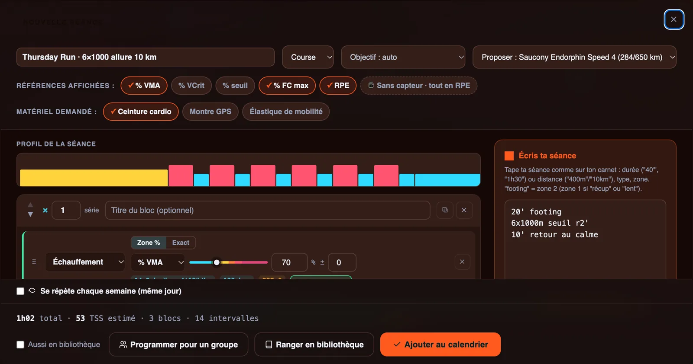
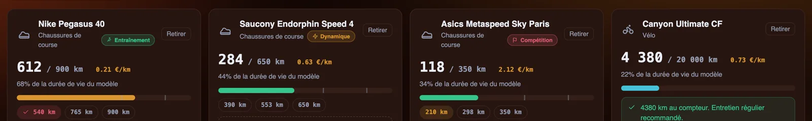
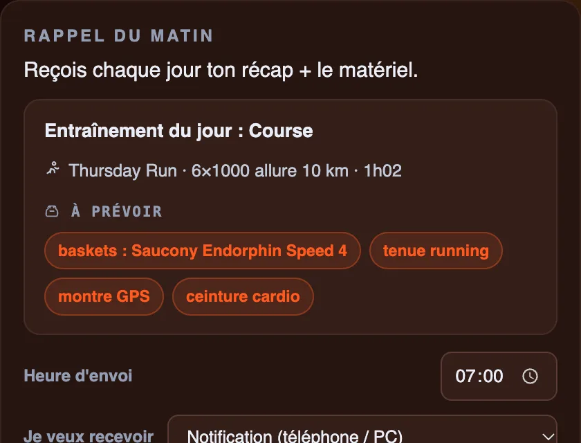
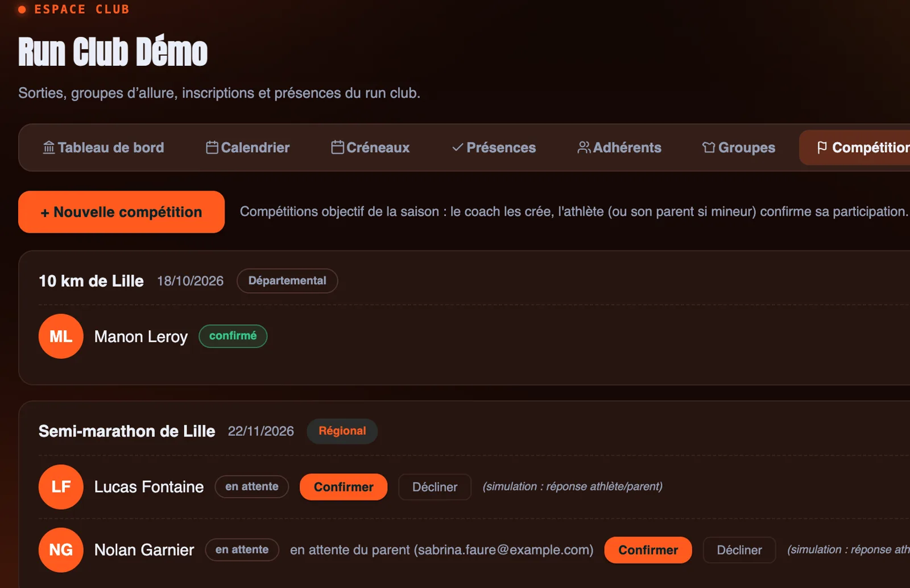
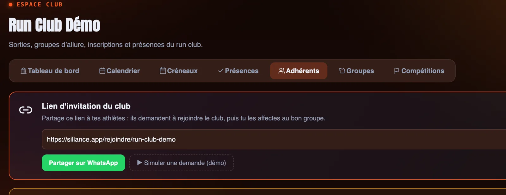

L'application des run clubs et clubs de course à pied
Les sorties de la semaine, les groupes d'allure, les présences, les courses objectifs du club et, pour ceux qui préparent un 10 km ou un semi, les séances envoyées sur la montre. Le tout aux couleurs de votre club.
Organisateurs illimités · COROS et Garmin · Aux couleurs du club

Du footing du dimanche au semi-marathon
Un run club réunit des coureurs qui viennent pour l'ambiance et d'autres qui visent un chrono. Les sorties s'organisent sur Instagram, les groupes sur WhatsApp, les présences de mémoire. Sillance rassemble tout au même endroit, sans perdre l'esprit du club.
Des sorties organisées
Chaque sortie hebdomadaire, son lieu, son horaire et la liste de ceux qui étaient là.
Chacun à son allure
Des groupes d'allure, et des séances dont les allures s'adaptent à la VMA de chaque coureur.
Une identité forte
Le logo, les couleurs et l'énergie de votre club, dans l'application de chaque membre.
Les sorties du club et qui était là
Créez les rendez-vous réguliers du club : la sortie du jeudi soir, la piste du mardi, la longue du dimanche. Pour chaque sortie, la liste des présents se tient en un coup d'œil.
- Lieu, horaire, capacité et groupes concernés.
- Taux de remplissage des sorties sur le tableau de bord.
- Une séance-type peut être attachée à une sortie.

Une séance en trois lignes, directement sur la montre
Tapez « 20' footing / 6x1000m seuil r2' / 10' retour au calme » : la séance se construit toute seule, avec les allures de chaque coureur calculées à partir de sa VMA, puis part sur sa montre.
- Envoi direct sur COROS, fichier .FIT pour Garmin.
- Programmez une séance pour tout un groupe d'allure en un clic (calculer ses allures VMA).
- Proposez la paire de baskets adaptée à la séance.

Les baskets de chaque coureur, suivies au kilomètre
Chaque coureur enregistre ses paires. Les kilomètres s'ajoutent à chaque séance, l'usure est calculée selon le modèle (une paire de compétition s'use bien plus vite qu'une paire d'entraînement), et il est prévenu avant que l'amorti ne lâche.

La séance du jour et le matériel à prévoir
Chaque matin, le coureur reçoit le rappel de sa séance avec la liste de ce qu'il doit prendre : la paire de baskets proposée, la tenue, la montre, la ceinture cardio. Plus personne ne part courir à la pause de midi sans sa montre.

Le 10 km, le semi, le marathon du club
Créez les courses que le club prépare ensemble, ciblez le groupe de préparation et suivez qui y participe. Les séances de préparation se construisent autour de l'objectif.

Un seul lien pour faire entrer vos membres
Partagez le lien d'invitation du club en story, sur WhatsApp ou sur votre site. Chaque coureur crée son compte en quelques secondes, et vous l'affectez à son groupe d'allure.

Tout le club, dans la poche de chaque membre
Aux couleurs du club
Logo, couleurs et police de votre club dans l'application.
Fil du club
Annoncez la sortie de la semaine à tout le club ou à un groupe.
Qui a besoin de vous
Blessures, fatigue, séances manquées : les coureurs à suivre remontent d'eux-mêmes.
Organisateurs illimités
Coachs, capitaines de groupe, bénévoles : sans surcoût.
Un prix au nombre de coureurs suivis, organisateurs illimités
Club
Grand club
Club illimité
Le détail des offres est sur la page tarifs. Vous êtes un club de triathlon ? Voir le logiciel pour club de triathlon.
Les questions des run clubs
Sillance est-il utile pour un run club où beaucoup de membres viennent juste courir ensemble ?
Oui. Le club y organise ses sorties, suit les présences, publie ses annonces dans le fil du club et anime ses courses objectifs. Les membres qui préparent un 10 km, un semi ou un marathon reçoivent en plus leurs séances sur la montre et leur rappel du matin.
Nos coureurs ont des montres différentes. Comment reçoivent-ils les séances ?
Les séances s'envoient directement sur les montres COROS, et en fichier .FIT pour les montres Garmin. Sans montre, le coureur suit sa séance dans l'application.
L'application peut-elle être aux couleurs de notre club ?
Oui. Nous préparons avec vous l'habillage de votre club : logo, couleurs et police. Vos membres retrouvent votre identité dès qu'ils ouvrent l'application.
Comment les membres rejoignent-ils le club sur Sillance ?
Avec un seul lien d'invitation, à partager sur Instagram, WhatsApp ou votre site. Chaque coureur crée son compte, puis vous l'affectez à son groupe d'allure.
Combien coûte Sillance pour un run club ?
50 € par mois jusqu'à 50 coureurs suivis, 112,50 € jusqu'à 150, 150 € jusqu'à 300, avec des entraîneurs et organisateurs illimités. Les 10 premiers clubs de chaque palier bénéficient d'un tarif fondateur bloqué à vie.
On vous montre Sillance aux couleurs de votre club ?
20 minutes avec vos sorties, vos groupes d'allure et votre identité visuelle.